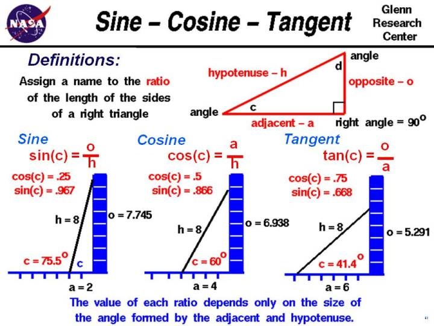

|

To better understand certain problems involving aircraft
and propulsion
it is necessary to use some mathematical ideas from
trigonometry,
the study of triangles.
Let us begin with some definitions and terminology
which we will use on this slide.
A right triangle is a
three sided figure with one angle equal to 90 degrees. A 90 degree angle is
called a right angle which gives the right triangle its name.
We pick one of the two remaining angles and label it c
and the third angle we label d.
The sum of the angles of any triangle is equal to 180 degrees.
If we know the value of c,
we then know that the value of d:
90 + c + d = 180
d = 180 - 90 - c
d = 90 - c
We define the side of the triangle opposite from the right angle to
be the hypotenuse. It is the longest side of the three sides
of the right triangle. The word "hypotenuse" comes from two Greek words
meaning "to stretch", since this is the longest side.
We label the hypotenuse with the symbol h.
There is a side opposite the angle c which we label o
for "opposite". The remaining side we label a for "adjacent".
The angle c is formed by the intersection of the hypotenuse h
and the adjacent side a.
We are interested in the relations between the sides and the angles of
the right triangle.
Let us start with some definitions.
We will call the
ratio
of the opposite side of a right triangle to the hypotenuse
the sine and give it the symbol sin.
sin = o / h
The ratio of the adjacent side of a right triangle to the hypotenuse is called the
cosine and given the symbol cos.
cos = a / h
Finally, the ratio of the opposite side to the adjacent side is called the
tangent and given the symbol tan.
tan = o / a
We claim that the value of each ratio depends only on the value of
the angle c formed by the adjacent and the hypotenuse.
To demonstrate this fact,
let's study the three figures in the middle of the page.
In this example, we have
an 8 foot ladder that we are going to lean against a wall. The wall is
8 feet high, and we have drawn white lines on the wall
and blue lines along the ground at one foot intervals.
The length of the ladder is fixed.
If we incline the ladder so that its base is 2 feet from the wall,
the ladder forms an angle of nearly 75.5 degrees degrees with the ground.
The ladder, ground, and wall form a right triangle. The ratio of the distance from the
wall (a - adjacent), to the length of the ladder (h - hypotenuse), is 2/8 = .25.
This is defined to be the cosine of c = 75.5 degrees. (On
another page
we will show that if the ladder was twice as long (16 feet),
and inclined at the same angle(75.5 degrees), that it would sit twice as
far (4 feet) from the wall. The ratio stays the same for any right triangle
with a 75.5 degree angle.)
If we measure the spot on the wall where the ladder touches (o - opposite), the distance is
7.745 feet. You can check this distance by using the
Pythagorean Theorem
that relates the sides of a right triangle:
h^2 = a^2 + o^2
o^2 = h^2 - a^2
o^2 = 8^2 - 2^2
o^2 = 64 - 4 = 60
o = 7.745
The ratio of the opposite to the hypotenuse is .967 and defined to be the
sine of the angle c = 75.5 degrees.
Now suppose we incline the 8 foot ladder so that its base is 4 feet from the wall.
As shown on the figure, the ladder is now inclined at a lower angle than in the
first example. The angle is 60 degrees, and the ratio of the adjacent to
the hypotenuse is now 4/8 = .5 . Decreasing the angle c
increases the cosine of the angle because the hypotenuse is fixed
and the adjacent increases as the angle decreases. If we incline the 8 foot
ladder so that its base is 6 feet from the wall, the angle decreases to
about 41.4 degrees and the ratio increases to 6/8, which is .75.
As you can see, for every angle,
there is a unique point on the ground that the 8 foot ladder touches,
and it is the same point every time we set the ladder to that angle.
Mathematicians call this situation a
function.
The ratio of the adjacent
side to the hypotenuse is a function of the angle c, so we can write the
symbol as cos(c) = value.
Notice also that as the cos(c) increases, the sin(c) decreases.
If we incline the ladder so that the base is 6.938 feet from the wall,
the angle c becomes 30 degrees and the ratio of the adjacent to
the hypotenuse is .866.
Comparing this result with example two we find that:
cos(c = 60 degrees) = sin (c = 30 degrees)
sin(c = 60 degrees) = cos (c = 30 degrees)
We can generalize this relationship:
sin(c) = cos (90 - c)
90 - c is the magnitude of angle d. That is why we
call the ratio of the adjacent and the hypotenuse the "co-sine" of the angle.
sin(c) = cos (d)
Since the sine, cosine, and tangent are all functions of the angle c, we can
determine (measure) the ratios once and produce tables of the values of the
sine, cosine, and tangent for various values of c. Later, if we know the
value of an angle in a right triangle, the tables will tell us the ratio
of the sides of the triangle.
If we know the length of any one side, we can solve for the length of the other
sides.
Or if we know the ratio of any two sides of a right triangle, we can
find the value of the angle between the sides.
We can use the tables to solve problems.
Some examples of problems involving triangles and angles include the
forces
on an aircraft in flight,
the application of
torques,
and the resolution of the
components
of a vector.
Here are tables of the sine, cosine, and tangent which you can use to solve
problems.
Activities:
Guided Tours
Navigation ..


- Beginner's Guide Home Page
|